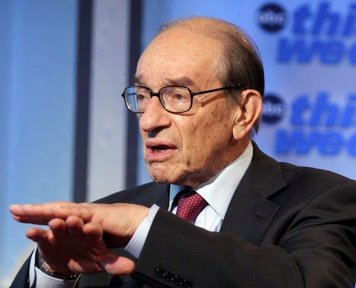
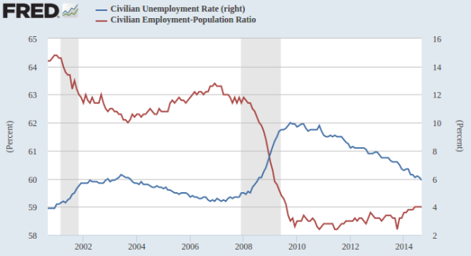

2015-06-29 12:37:00
在上週的第四場演講後，有位聽眾問到通貨膨脹和央行政策的問題，當時我給了一個兩分鐘長度的答案。其實我在這方面的觀點和前文《民主政治與自由經濟》裡討論的市場經濟和民主政治的充要條件一樣，都是我個人多年來自修的獨有心得，與主流學術界的說法有衝突，所以不論對錯深淺，它應該還是有記錄下來的價值。不過這問題比較複雜，無法用一個段落就說清楚，不適合在《四場演講》裡草草帶過，所以在此詳細談一談。
美國經濟學界始終很頑固地認為重要的通貨膨脹只有一種，也就是所謂的CPI（Consumer Price Index）。自1990年代中期開始，CPI反常地溫和，當時的聯儲會主席Alan Greenspan因此而覺得不必緊缩銀根，把利率定在很低的水平，結果是股票市場成倍上漲，但是Greenspan不但沒有自覺這個泡沫是他一手吹大的，居然還質疑說那是非裡性的狂歡（Irrational Exuberance）。互聯網泡沫爆破之後，Greenspan壓低利率的偏好更為嚴重，於是一個更大的泡沫就出現在房地產界；Greenspan仍然一無所覺，美國經濟學界甚至搞出了“大溫和”（“Great Moderation”）的歪論來解釋為什麼金融性的資產價格漲翻天了，CPI卻仍然走低。我在幾場Greenspan的演講裡，只見一片互相拍肩慶賀的自我滿足感，像Robert Shiller這種略持保留態度的學者都被當做掃興鬼，我這種名不見經傳卻私下覺得這些美國經濟學人不是騙子就是白痴的旁觀者自然是一句話都不敢吭的。當然幾年後房地產泡沫也爆了，全球經濟損失了幾萬億美元，繼任Greenspan為聯儲會主席的Ben Bernanke雖然學術高明，明知寬鬆銀根是這些泡沫的動力來源，卻也必須兩害相權取其輕，不但把利率壓到基本為零的水平，還進一步憑空印了四萬多億美元的鈔票，冒著動搖美元國際地位的危險，也要把股票市場炒過2000年的高峰。可是至今七年了，美國的通貨（亦即M3）一下子增加了30%，工資卻還停在1989年的水平，CPI也是年年溫和，那麼到底有沒有通貨膨脹？

Alan Greenspan，1987年到2006年間的聯儲會主席。他似乎真正相信美式經濟學的胡扯，所以在騙子和白痴之中，他屬於後者。在1996年到2006年間，美國經濟學界和金融界普遍稱他為Maestro（大師），當時我就對“大師”這兩個字有了很大的反感。此前有讀者留言要給我同樣的稱號，還請大家饒了我；王孟源雖然不才，還不至於想被人與禍國殃民的白痴相提並論。
其實要解釋這些歷史很簡單，我們只要了解到通貨膨脹並不是一次元的，而是一個有好幾個獨立變數的現象，就可以得到自相吻合（Self-Consistent）的邏輯。我個人在觀察宏觀經濟現象的時候，至少會設定四個通貨膨脹的變數，分別對應著原材料、工資、消費產品和金融資產。原材料的價格主要由供給與需求的平衡來決定；工資在一個國家內部主要由政策決定是否強迫資本家為勞工加薪分利，但是在國際間是要互相競爭的；消費產品的價格基本由前兩項再加上廠商的利潤來決定；而金融資產卻是與前三者都沒有關聯，完全視儲蓄出來的多餘資本（尤其是財閥和銀行所能動用的資本額）總量來決定；追求金融資產的剩餘資本越多，價格就會被推得越高。自1990年代起，中國的崛起為全世界提供了一個工資低廉卻有可靠供應鏈的生產地，於是逐漸吸收了歐美原有的工業產能，結果同時壓低了全球工資和消費品的價格，使CPI保持溫和。Greenspan不明白這個道理，寬鬆銀根灌注了萬億美元級的游資進入美國經濟，但是實體經濟正往中國轉移，自然沒有能力或意願吸收這筆資金，於是就完全流入金融資產的市場，先是股票，後是房產，泡沫越吹越大。
到了2000年代，中國自身的快速基礎建設開始消耗大量的原材料，使得這方面的通貨膨脹壓力步步提升，但是中國工業界的激烈競爭迫使其生產效率也高速上升，再加上廉價的中國產品對高價歐美產品的逐步替代，使歐美的CPI維持相當溫和的程度，但是這對他們的工資水平卻是雪上加霜。人類的心理是很難接受減薪的（經濟學裡有兩個很重要的零障礙，第一個是利率不能跌過零，否則儲蓄戶還不如換成現金；第二個是工資的通貨膨脹率，降薪對士氣的打擊很大，往往還不如乾脆解僱部分員工），所以這個外來競爭壓力的結果是工資不升不降，但是就業率往下掉來減低企業的工資總付出，例如美國在最近15年間成年就業率由64%降到了59%（中國是75%）。當然與此同時，美國企業的利潤是很健康的，因為他們的成本由中國製造商負責壓低了。至於聯儲會的降息和量化寬鬆，那些多出來的錢都必然先進了銀行和他們的大客戶的口袋，最自然的下一步就是進入金融資產，所以過去7年來美國的股市、債市和房市都達到或接近了歷史新高，老百姓真正在乎的工資和就業率卻基本感覺不到任何助力。

藍線是美國過去15年的失業率（右標），紅線則是就業率（左標），灰區是經濟衰退期。2000年時的64.5%就業率，是美國自70年代開始女性大批進入就業市場後所到達的史上最高點。目前的失業率雖然已降到與2003年相同的6%，就業率卻下降了3+%，這是因為失業率只算還在找工作的人，一旦放棄找工作就只反映在就業率的降幅。
日本在過去25年飽受通貨緊縮之苦，其實所謂的通貨緊缩問題，和美國同樣是工資和就業率的緊缩，老百姓對消費價格是寧可便宜些的。至於金融資產，那更是無關一般人民的生活，漲價主要裨益於銀行、財閥和國際資本。所以安倍的量化寬鬆+貨幣貶值政策，先天上就是緣木求魚；前者只會推高股價，後者則推高進口的原材料和消費品價格，日本人民真正需要的工資增長恰是唯一不受影響的通貨膨脹變數。在全球貿易時代，工資增長靠的是生產競爭力的提升，而要提升競爭力，只能靠痛苦的結構改革。如果為了止痛，暫時進行量化寬鬆是合理的；但是像安倍這樣指望用止痛藥來治癌，那就注定只會徒然增加國債。日本的國債已是世界第一，高達GDP的230%，比希臘的180%還要離譜的多，全靠著強迫郵政儲蓄體系來購買新債拖延時間。安倍的胡搞必然會讓國債逐步往GDP的300%甚至400%進升，屆時危機爆發後將比希臘還要淒慘。
為什麼這麼簡單的道理，美日政府卻不懂呢？這是因為他們都相信美式經濟學，而我已經在幾篇前文裡解釋過，美式經濟學完全只是美國財閥的宣傳機制。把人民想要的工資通貨膨脹和人民不想要的消費品通貨膨脹混為一談，在聯儲會放鬆銀根時可以說是為人民加薪，在緊縮銀根的時候可以說是為了控制物價，實際上真正操弄的是財閥炒作的金融資產。我在上週給第二場演講的時候，有一位聽眾問道，讓財閥控制全國經濟有什麼不好？這裡就是一個例子：為了財閥的利益，經濟學界不說實話，結果是政府就無法採行正確的金融和貨幣政策，最後造成影響國運的極大損失。所以不但財閥專制不好，凡是不能誠實討論政策得失的國家，注定是衰退的命。台灣的政客和傳媒，基本上說的都是為了主觀利益的胡扯，那麼近年來的國勢衰頹就不但是合理的，也是必然的。